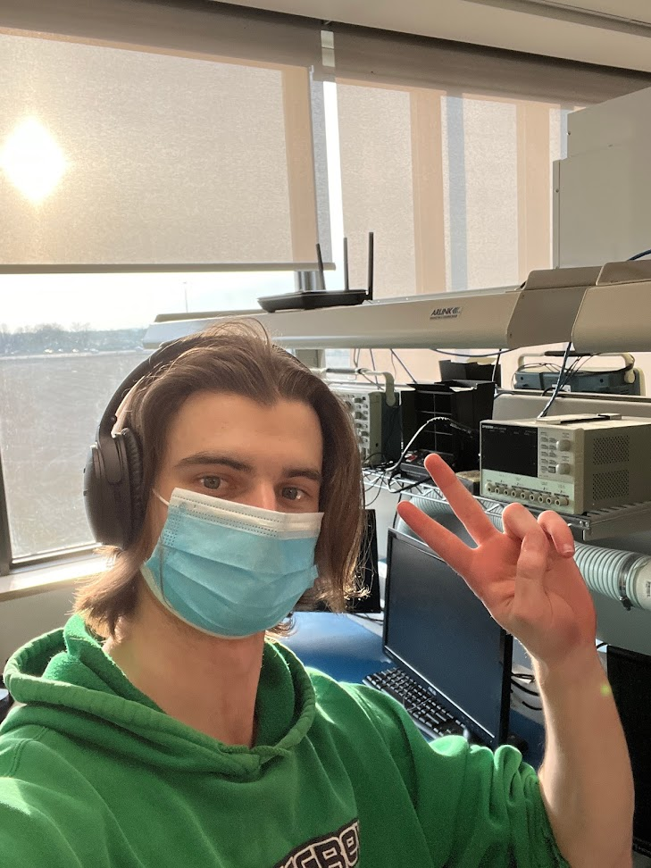

See the video!
About Us
Our team is composed of four people:
Nick
Hello, I'm Nickolas! Third year ESE @ Conestoga College.
Liam
Hello, I'm Liam! Third year ESE @ Conestoga College.
Guneet
Hello, I'm Guneet! Third year ESE @ Conestoga College.

Ben
Hello, I'm Ben! Third year ESE @ Conestoga College.

Purpose
The purpose of this project is to control an elevator using CAN based messaging systems. The elevator has 3 floor controllers which can be controlled through the CAN bus, additionally there is a supervisory controller which oversees all other CAN devices. This controller will be connected to the network through a connector C++ program which connects to an SQL database and then a web server. Using this we can conenct the elevator controls to this website ensuring easy access to control the elevator from anywhere with an internet connection.
CAN communicates by using a differentially routed messaging system. Within the message the sender includes their ID which tells the recieving devices if the message is intended for them. This message system also includes a priority system which allows messages at higher priority to be transmitted without any conflicts with other messages. We will be using standard CAN messages which means that the message IDs can be 11 bits long. The messages have the ability to be 8 bytes long, however, we will only be using 1 byte.
Additionally, the CAN network will be able to check it's messages for errors using the CDC and ACK functions of the CAN message. This ensures that the elevator functions correcly without any unfortunate events.
Where are we?
Back to home